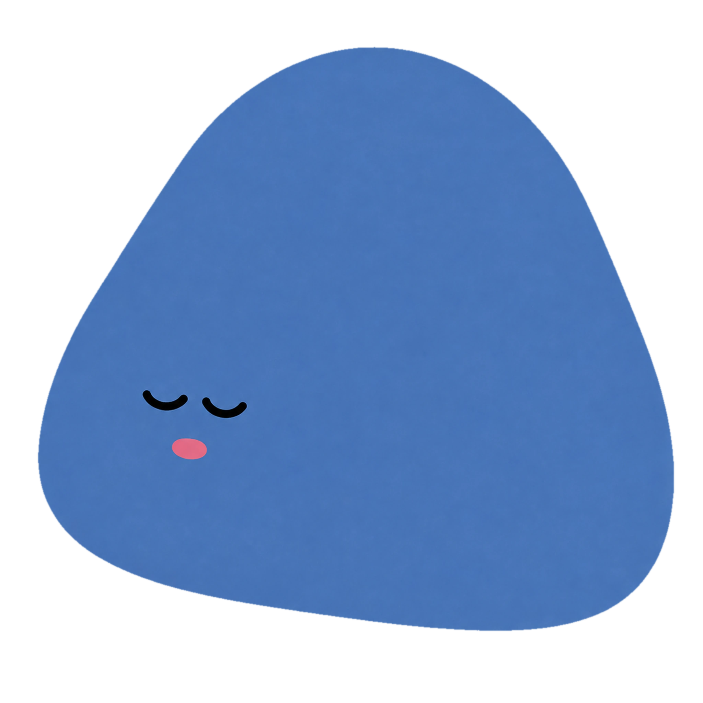

哀
아직 마음에 남아 있나요?
단어에서 시작해 마음을 꺼내고,
문장을 바라본 뒤 호흡과 함께
천천히 놓아봅니다.
01 / 슬픔의 단서
어떤 말부터
꺼낼까요?
가장 오래 머무는 단어 하나를 고르세요.
선택한 단어가 한 문장의
시작이 됩니다.
지금 마음에 가장 오래 머무는 단어는 무엇인가요?
선택과 입력은 저장되거나 서버로 전송되지 않습니다.
02 / 문장 마주하기
내가 쓴 말을
천천히
읽어보세요.
문장을 누를 때마다 흐렸던 획이 돌아옵니다.
파란 흔적은 잠시
남았다가 옅어집니다.
이 문장 뒤에 남은 마음을 잠시 바라봅니다.
문장을 천천히 눌러보세요.03 / 네 번의 호흡
잠깐,
숨을 고를까요?
원을 누르는 동안 천천히 들이쉬고,
손을 놓으며 편안하게
내쉬어요.
파란 친구와 함께 네 번, 서두르지 않아도 괜찮아요.

00 — 04
SPACE를 누르고 있다가 천천히 놓아주세요.
조금 더
쉬었다 가도 돼요.
지금 남아 있는 감정도 그대로 두어도 괜찮습니다.